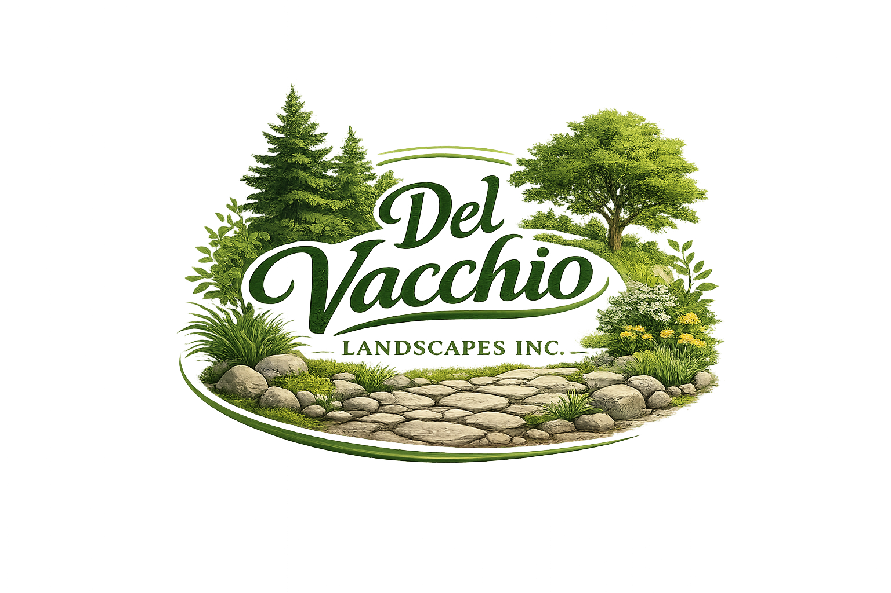
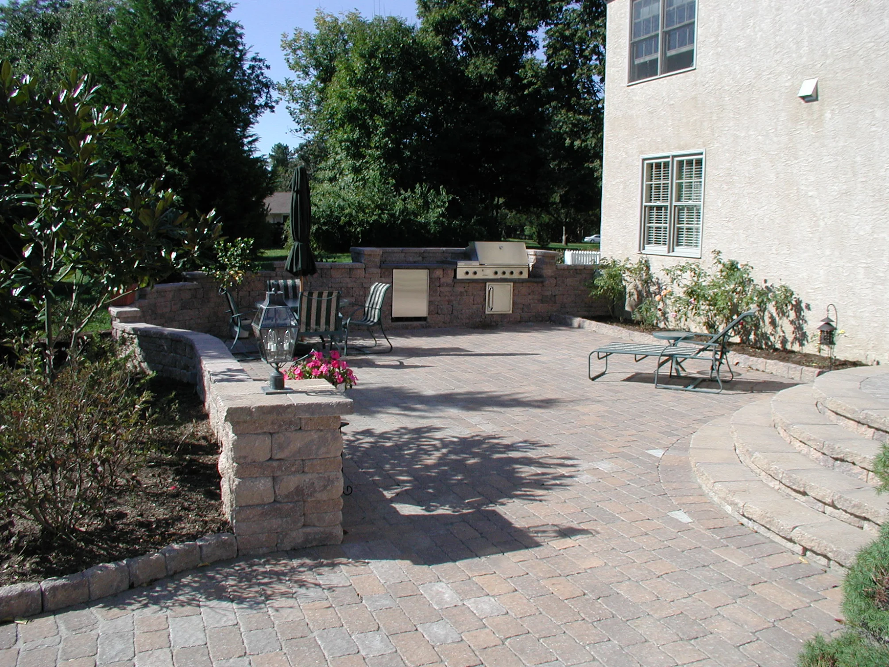
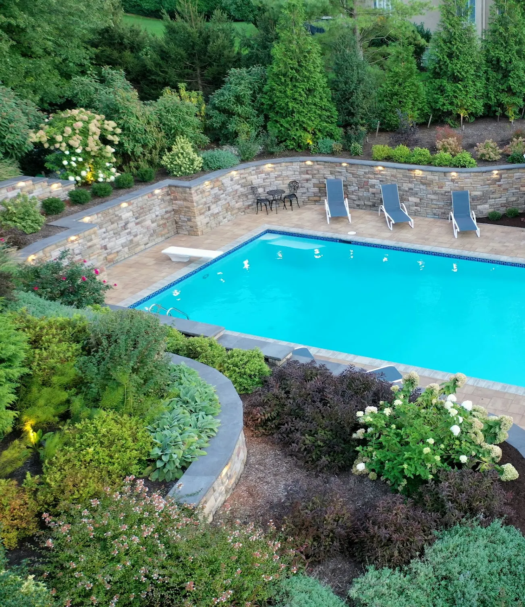
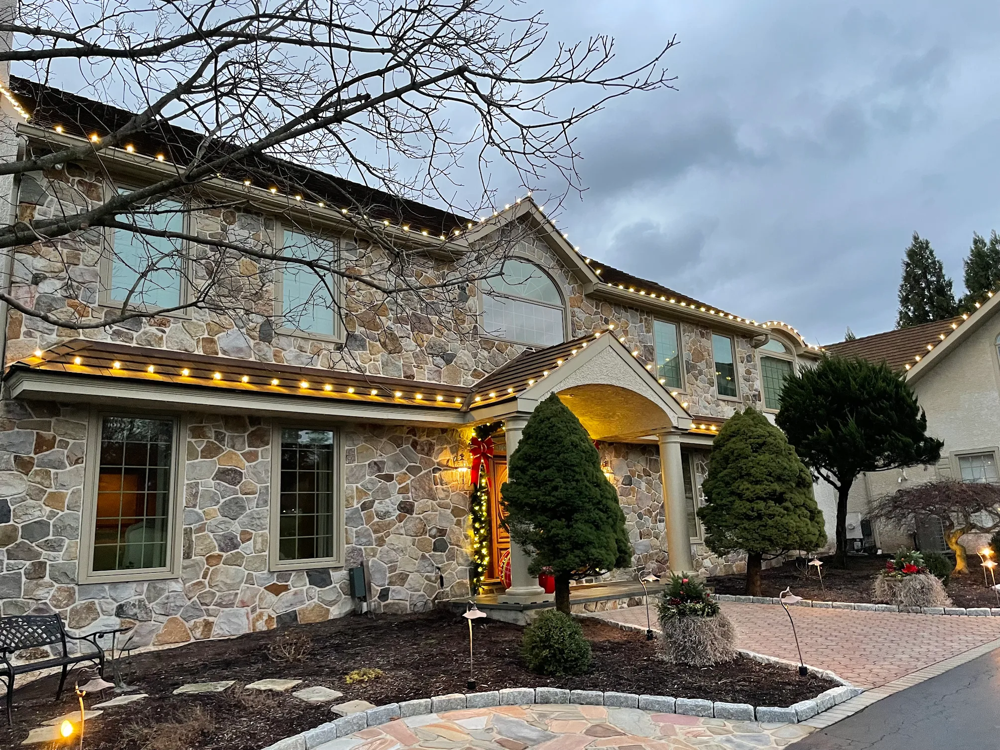
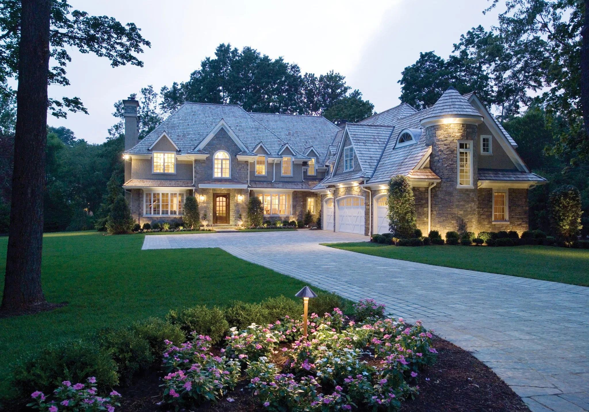
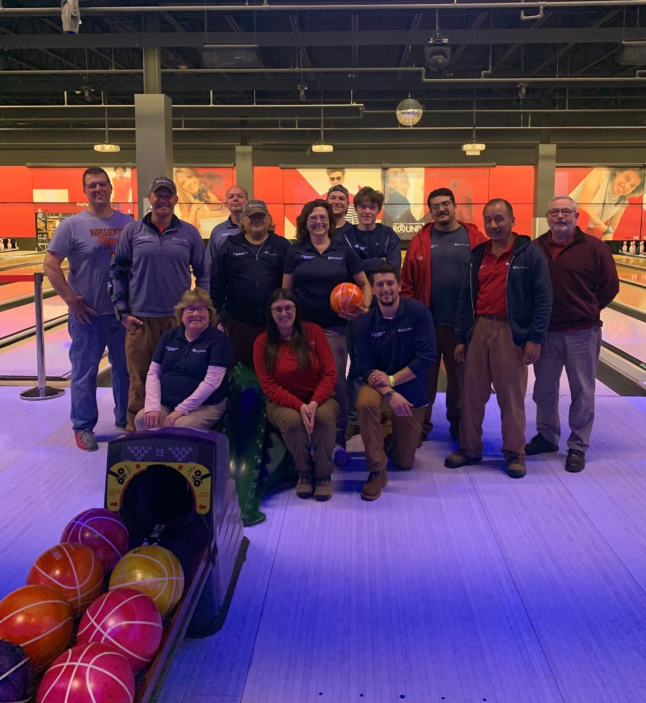
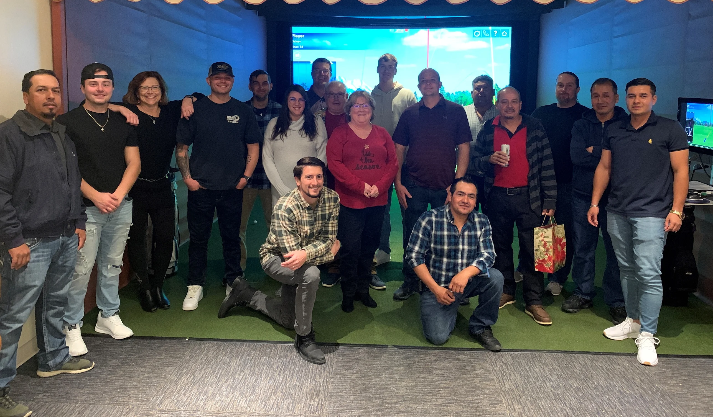

Clean geometry, planting restraint, and first-impression control.
Bed design, edge definition, and seasonal color planning structured to strengthen the architecture rather than compete with it.

(215) 909-1420Del Vacchio Landscapes Inc.
Philadelphia Main Line and surrounding properties
Landscape Design / Hardscape Craft / Seasonal Installations
Del Vacchio Landscapes designs, builds, and maintains high-end outdoor spaces with cleaner lines, stronger structure, and a more architectural point of view.

5.0 rated service
Landscape + hardscape integration
Professional, on-time crews
White-glove project finish
Featured Work
Landscape structure, hardscape proportion, and planting restraint are handled as one composition, not separate trades.
Bed design, edge definition, and seasonal color planning structured to strengthen the architecture rather than compete with it.


"The work is beyond meticulous. They show up when they say and complete the project in a timely yet thorough manner."
Michael G · Local GuideScope
From renovation work to ongoing care, each service is structured to improve how the full property reads and performs over time.
Planting plans, bed reshaping, grading adjustments, and visual refinement across the full property.
Patios, walkways, retaining elements, and stone features executed with structural discipline.
Maintenance programs that keep edge quality, bed composition, and presentation standards intact.
Holiday installations with controlled routing, balanced composition, and reliable removal service.
Process
Del Vacchio Landscapes is hired by clients who care about finish quality. The process stays direct: define the scope well, build it cleanly, and leave the property better resolved than when we arrived.
Each phase is meant to reduce ambiguity, protect the property, and keep the finished work reading as one complete system.
On-site walkthrough, priorities, layout review, and detailed recommendations.
Professional crews, disciplined scheduling, and material execution with close oversight.
Final quality pass, cleanup, and long-term guidance for care and seasonal continuity.



Reviews
The common thread is consistency: clear communication, punctual crews, and a finish level clients notice immediately.
"Del Vacchio Landscapes is simply among the best in the business. They can meet just about any of your landscape, hardscape, and Christmas decor needs. The staff are ultimate professionals."
Michael G · Edited 2 months ago"Chris's crew was perfect. They arrived on time, put up our Christmas lights, and finished quickly while making sure our needs were met."
Nicole Sage · 4 months agoConsultation
We build tailored proposals for landscape renovations, hardscape construction, maintenance plans, and seasonal decor installations.
Most clients come to us when the property feels under-resolved, inconsistent, or overdue for a cleaner overall direction.
Del Vacchio Landscapes Inc. serves Philadelphia-area homeowners who want clean execution and lasting value.